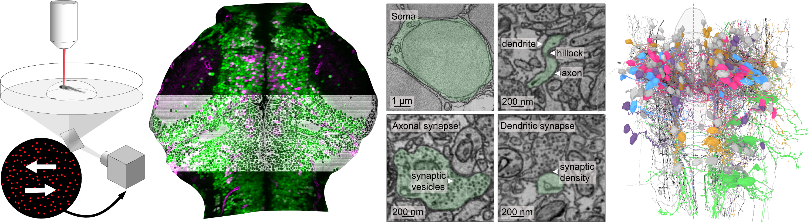

A Functional Connectomics Ressource for the Larval Zebrafish Brain

The Lichtman, Engert laboratories at Harvard University, the Del Bene laboratory at the Institut de la Vision (Sorbonne Université), Paris and the Bahl laboratory at Konstanz University, Germany are releasing the Fish1.5 dataset and its companion papers.
Fish1.5 is a 7-day post-fertilization larval zebrafish dataset, combining electron microscopy (EM) and two-photon calcium imaging from the same specimen. Both modalities are registered at single cell resolution. The imaged region spans from the medial optic tectum to rhombomere 3. To generate this dataset, we used a transgenic larvae expressing a nuclear calcium indicator under the elavl3 pan-neuronal promoter, along with red fluorescent markers labeling the main inhibitory neuronal subtype and vascular endothelial cells: Tg(elavl3:H2B-GCaMP7f, gad1b:DsRed, kdrl:mCherryCAAX)
The resulting EM dataset, acquired at a resolution of 4 × 4 × 30 nm, provides ultrastructural details such as synaptic connections and subcellular features. This volume includes 62745 cell bodies out of which 15017 were functionally imaged using 4 stimuli : left- and rightward-moving dots of 100% coherence and sine gratings in six optical planes spaced by 12 μm along the dorso-ventral axis.
The dataset is editable through a collaborative proofreading tool, CAVE from Dorkenwald et al., 2025, allowing the community to reconstruct neurons of interest, analyze their connectivity, overlay neurotransmitter and functional information to test circuit models. To request editing privileges for the Fish1.5 dataset, please fill out this form. Browsing and editing the dataset requires a Google account and works best in Chrome and Firefox.
We are grateful to Zetta AI for alignment, cell segmentation, synapse detection & assignment, and hosting CAVE.
Explore More:
- Manuscripts highlight recent publications that leverage or complement the Fish1.5 dataset.
- Gallery showcases various neuronal and glial populations in the dataset.
- Navigation and Proofreading using CAVE.
- Tutorials for interacting with the dataset and get programmatic access to reconstructed neurons, synaptic connectivity and functional responses.